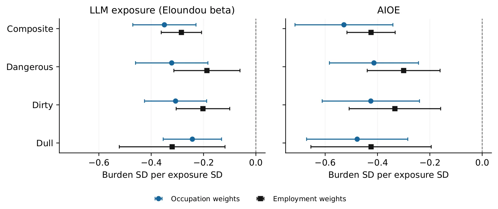
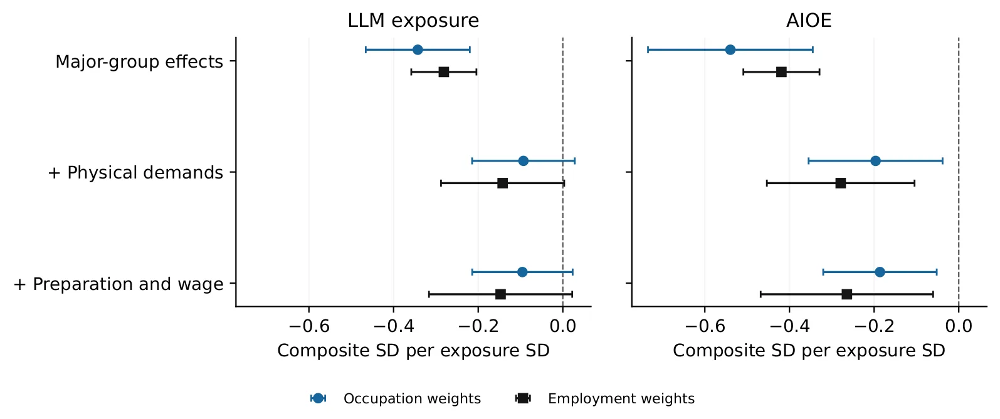
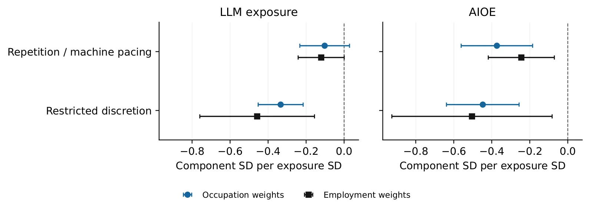

Contexto
A narrativa comum sobre automação e inteligência artificial é a de que essas tecnologias servirão para libertar os trabalhadores das tarefas mais indesejáveis: as chatas, as sujas e as perigosas. Essa justificativa moral e prática dá um propósito claro para o desenvolvimento de sistemas de automação. No entanto, para pesquisadores de HCI (Interação Humano-Computador) e para quem estuda o impacto social da tecnologia, essa promessa levanta uma questão concreta e muitas vezes negligenciada: qual parte exata do dia de trabalho um sistema proposto realmente melhora?
Um sistema pode encurtar o tempo de uma tarefa repetitiva, mas deixar inalterados os níveis de ruído, a presença de equipamentos perigosos ou as restrições à tomada de decisão do trabalhador. Para avaliar se há, de fato, alívio, é necessário conectar a operação do sistema à condição específica que se pretende alterar. As pontuações de exposição à IA ocupacional descrevem o potencial técnico através das profissões, mas não fazem essa conexão causal ou de melhoria por si só.
O paper de Siyi Yu, da Purdue University, intitulado 'Dull, Dirty, Dangerous? Working Conditions and the Limits of Occupational AI Exposure', examina como essas condições se relacionam com a exposição à IA. O estudo utiliza 21 itens do banco de dados O*NET Work Context, que fornece avaliações de condições de trabalho, para 754 ocupações nos Estados Unidos. O objetivo não é provar que a IA melhora o trabalho, mas sim testar a validade empírica da associação entre exposição à IA e a redução dessas condições negativas.
A distinção entre potencial técnico e melhoria real é crucial em dois estágios da pesquisa. Primeiro, na seleção de um cenário de estudo, os pesquisadores precisam entender as condições associadas a uma ocupação, em vez de inferi-las apenas pela sua pontuação de exposição à IA. Segundo, na avaliação de um sistema, é necessário estabelecer se a mudança proposta aborda uma condição que os trabalhadores realmente desejam alterar. Estudos críticos já desafiaram a suposição de que a automação técnica necessariamente melhora o trabalho, mostrando a importância das avaliações dos trabalhadores.
Metodologia
Para testar a hipótese de que a IA está associada a ocupações com condições mais precárias, os autores organizam 21 itens do O*NET Work Context em domínios associados às categorias 'Chato' (Dull), 'Sujo' (Dirty) e 'Perigoso' (Dangerous). Esses itens descrevem ambientes físicos, perigos ocupacionais, atividades repetitivas e níveis de discricionariedade (autoridade para tomar decisões). Em seguida, vinculam essas pontuações de condição a duas medidas publicadas de exposição à IA: a exposição baseada em Modelos de Linguagem de Grande Escala (LLM) e a Exposição à IA Ocupacional (AIOE).
A medida de exposição LLM, baseada no trabalho de Eloundou et al., estima a probabilidade de tarefas serem realizadas por LLMs, focando em capacidades cognitivas como processamento de linguagem e análise. A medida AIOE, proposta por Collewet et al., é uma pontuação mais ampla que considera a automação de diversas habilidades, não apenas as ligadas a LLMs. Ambas as medidas são calculadas para as 754 ocupações, permitindo uma comparação direta.
Os autores aplicam dois esquemas de ponderação para evitar viés de tamanho da ocupação. O primeiro usa pesos iguais para todas as ocupações, tratando cada profissão como um ponto de dados independente. O segundo usa pesos baseados no emprego, dando mais importância às ocupações com maior número de trabalhadores. Isso permite verificar se os resultados são robustos ou se são ditados por poucas profissões massivas.
O modelo de regressão principal compara as ocupações dentro de grandes grupos profissionais, controlando por efeitos fixos de grupo. Isso isola a variação dentro de famílias de ocupações semelhantes, evitando que diferenças amplas entre setores (como agricultura versus tecnologia) dominem a análise. O resultado primário mede a associação entre as pontuações de condição de trabalho e as pontuações de exposição à IA, sem ajustes iniciais para outras variáveis demográficas ou econômicas.

Resultados Iniciais
Os resultados iniciais, sem ajustes, mostram uma associação negativa consistente: maior exposição à IA está ligada a menores pontuações nas condições de trabalho. Isso significa que, nas ocupações com maior potencial de automação por IA, os trabalhadores relatam menos condições consideradas 'chatas', 'sujas' ou 'perigosas'. Para a pontuação composta, o coeficiente de exposição LLM é de -0,350 com pesos iguais e -0,285 com pesos de emprego. Para a AIOE, os coeficientes são ainda mais negativos: -0,528 e -0,425, respectivamente.
Essa associação sugere, à primeira vista, que a IA está de fato focada em tarefas que os trabalhadores evitam. No entanto, os autores alertam que essa correlação pode ser enganosa. As ocupações com alta exposição à IA contemporânea são predominantemente cognitivas, enquanto as condições 'sujas' e 'perigosas' estão frequentemente ligadas a trabalhos físicos. A associação negativa pode refletir apenas a diferença estrutural entre empregos de escritório e empregos manuais, não um alívio específico proporcionado pela IA.
Os domínios 'Sujo' e 'Perigoso' têm uma correlação alta entre si (r = 0,804), indicando que tendem a aparecer juntos nas ocupações. Da mesma forma, as duas medidas de exposição à IA (LLM e AIOE) estão altamente correlacionadas (Pearson r = 0,833). Essa sobreposição exige cuidado na interpretação, pois é difícil distinguir se um resultado é específico de uma medida ou uma característica geral da automação.
Ao incluir efeitos fixos de grandes grupos ocupacionais, a magnitude da associação diminui, mas permanece negativa. Isso indica que parte da correlação inicial existe entre famílias de ocupações diferentes, mas uma associação significativa persiste dentro de grupos semelhantes. Por exemplo, dentro do grupo de 'vendas e serviços', as ocupações com maior exposição à IA ainda tendem a ter pontuações mais baixas nas condições negativas.
Ajuste e Atenuação
O ponto crucial do paper é a análise de ajuste. Os autores adicionam variáveis de controle ao modelo: demandas físicas, nível de educação exigida (Job Zone), treinamento, experiência e salários medianos. O objetivo é ver quanto da associação entre IA e condições de trabalho permanece quando se controla por essas características fundamentais do emprego.
O ajuste para demandas físicas tem um impacto dramático. Quando as demandas físicas entram no modelo, o coeficiente da exposição LLM cai de -0,343 para -0,093. Isso representa uma redução de mais de 70% na magnitude da associação. Ao adicionar também o nível de preparo ocupacional e o salário logarítmico, o coeficiente fica em -0,095, com um intervalo de confiança de 95% de [-0,214, 0,023]. Como esse intervalo inclui zero, a associação estatisticamente significativa desaparece para a medida LLM.
Para a medida AIOE, a associação persiste, mas também diminui. O coeficiente ajustado é de -0,186 (intervalo [-0,320, -0,052]) com pesos iguais e -0,264 (intervalo [-0,468, -0,060]) com pesos de emprego. Ambos os intervalos permanecem abaixo de zero, sugerindo uma correlação residual. No entanto, a R² parcial da exposição à IA nos modelos ajustados é muito baixa: 1,1% para LLM e 2,4% para AIOE com pesos iguais. Isso significa que a exposição à IA explica uma fração minúscula da variação nas condições de trabalho, além do que já é explicado por salário e demandas físicas.
Esses resultados qualificam fortemente a interpretação inicial. A associação negativa observada nos modelos primários é amplamente explicada pelas diferenças estruturais entre empregos físicos e cognitivos, e não por um efeito direto da IA em melhorar condições de trabalho. O fato de os intervalos de confiança do LLM incluírem zero após o ajuste indica que não podemos afirmar com confiança que há uma associação populacional negativa para essa medida específica.

Anatomia do Trabalho Chato
O domínio 'Chato' (Dull) é particularmente interessante porque combina duas condições distintas: repetição de movimentos/ritmo de máquina e restrição de discricionariedade (pouca autoridade para decidir). Os autores separam esses componentes para ver se a IA está associada a ambos ou apenas a um deles. Essa distinção é vital, pois 'trabalho chato' pode significar tédio mecânico ou falta de autonomia, questões de design de sistema muito diferentes.
Os resultados mostram padrões descritivos diferentes. Para a exposição LLM, os coeficientes são mais negativos para a restrição de discricionariedade do que para a repetição. Com pesos iguais, o coeficiente para repetição é -0,102 (intervalo [-0,233, 0,028]), que inclui zero, enquanto para restrição de discricionariedade é -0,334 (intervalo [-0,452, -0,216]), que não inclui zero. Isso sugere que a IA está mais fortemente associada a ocupações onde os trabalhadores têm menos autonomia do que àquelas onde apenas realizam movimentos repetitivos.
Essa diferença tem implicações importantes. Se um sistema de IA for projetado para reduzir o tédio através da automação de tarefas repetitivas, ele pode não abordar a falta de discricionariedade, que é uma fonte diferente de insatisfação. A combinação desses itens em uma única pontuação 'Chato' pode obscurecer qual condição está sendo realmente associada à exposição à IA. Relatar apenas a estimativa composta perde essa informação crítica.
A análise também destaca que o índice não mede diretamente o tédio subjetivo. Os itens do O*NET descrevem condições ocupacionais, não a experiência interna do trabalhador. Um trabalho pode ser repetitivo sem ser percebido como chato por um trabalhador que valoriza a clareza e a previsibilidade. Portanto, as estimativas componentes não estabelecem nem removem essa limitação de medição.

Limitações
Os autores são claros sobre as limitações do estudo. A análise é observacional e correlacional; ela não estabelece causalidade. A associação ajustada pode refletir habilidades ocupacionais não medidas, outras condições de trabalho omitidas ou sobreposição nas entradas de medição entre as variáveis de condição e as medidas de exposição à IA. O ajuste para demandas físicas não é uma explicação causal, mas uma forma de isolar a variância.
Além disso, o estudo não pode avaliar o benefício real para o trabalhador. Nem um coeficiente grande inicial nem um coeficiente ajustado persistente fornecem evidências sobre as preferências dos trabalhadores ou os resultados de intervenções específicas. A avaliação de mudanças reais no bem-estar ou na saúde requer designs de pesquisa longitudinais, como os utilizados por Giuntella et al., que observam indicadores de saúde ao longo do tempo.
Outra limitação é a generalização. Os dados do O*NET são baseados em avaliações de especialistas e podem não capturar a heterogeneidade dentro de uma única ocupação. Diferentes trabalhadores na mesma profissão podem experimentar condições radicalmente diferentes. A média ocupacional não distingue as condições que os trabalhadores valorizam, toleram ou desejam alterar.
Finalmente, a distinção entre as medidas LLM e AIOE permanece importante. A AIOE mantém uma associação residual mesmo após os ajustes, enquanto a LLM não. Isso pode refletir diferenças na forma como as medidas capturam a automação de habilidades cognitivas versus físicas. Ignorar essa distinção pode levar a conclusões incompletas sobre o impacto da IA.
Conclusão
O paper conclui que a promessa de que a IA alivia o trabalho 'chato, sujo e perigoso' precisa ser qualificada. A associação inicial observada é amplamente explicada pelas diferenças estruturais entre empregos físicos e cognitivos, e pela influência de salários e demandas físicas. Para a medida LLM, a associação desaparece após o ajuste estatístico.
Para pesquisadores de HCI e HRI, a mensagem central é a necessidade de especificidade. Não basta afirmar que um sistema de IA melhora o trabalho ao reduzir o tédio. É necessário definir qual aspecto do 'trabalho chato' está sendo abordado: a repetição mecânica ou a falta de autonomia? A operação do sistema deve ser conectada à condição específica que se pretende alterar, e não a rótulos vagos.
Os perfis ocupacionais oferecidos pelo estudo servem como um ponto de partida para selecionar cenários de pesquisa contrastantes. No entanto, estabelecer se a automação desejada ou o alívio realizado é benéfico requer evidências sobre as preferências dos trabalhadores e resultados de intervenções específicas. A exposição à IA é um indicador de potencial técnico, não de melhoria humana.
Em resumo, o paper desafia a narrativa otimista da automação como alívio moral. Ele mostra que, estatisticamente, a IA está associada a ocupações que já têm melhores condições, mas essa associação é fraca e confusa quando controlada por variáveis econômicas e físicas. A contribuição do estudo é tornar a comparação ocupacional mais específica, expondo as escolhas de mensuração que moldam as interpretações, e deixando a avaliação real do impacto do trabalho para desenhos de pesquisa mais robustos.
O que fica
- A associação negativa entre exposição à IA e condições de trabalho precárias enfraquece drasticamente ao controlar por demandas físicas e salários, desaparecendo estatisticamente para a medida LLM.
- Separar o conceito de 'trabalho chato' revela que a IA está mais correlacionada com a restrição de discricionariedade do que com a repetição mecânica de tarefas.
- A exposição à IA explica uma fração mínima da variação nas condições de trabalho (R² parcial < 3%), sugerindo que diferenças estruturais entre empregos explicam a maioria da correlação.
- Promessas de alívio da automação exigem especificidade: é necessário conectar a operação do sistema à condição específica (ex: autonomia vs. repetição) que se pretende alterar.
Paper original: Dull, Dirty, Dangerous? Working Conditions and the Limits of Occupational AI Exposure
Comentários
Nenhum comentário ainda. Seja o primeiro.